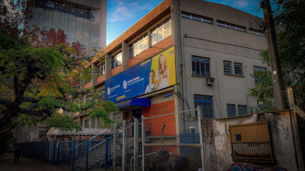
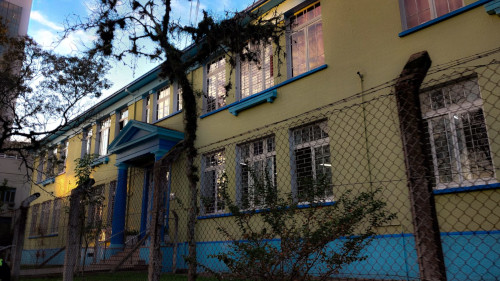

Estamos trabalhando com as escolas do bairro Centro e arredores.
Colégio Dom Feliciano;
Est Ens Fun Salvador Canellas Sobrinho;
Colégio Estadual Barbosa Rodrigues;
Est Ens Med Prof Maria Josefina Becker;
Colégio Cenecista Nossa Senhora dos Anjos(Gensa);
Est Ens Med Adelaide Pinto de Lima Linck (Polivalente).
Nas fotos abaixo, podemos ver os colégios Barbosa e Gensa:

